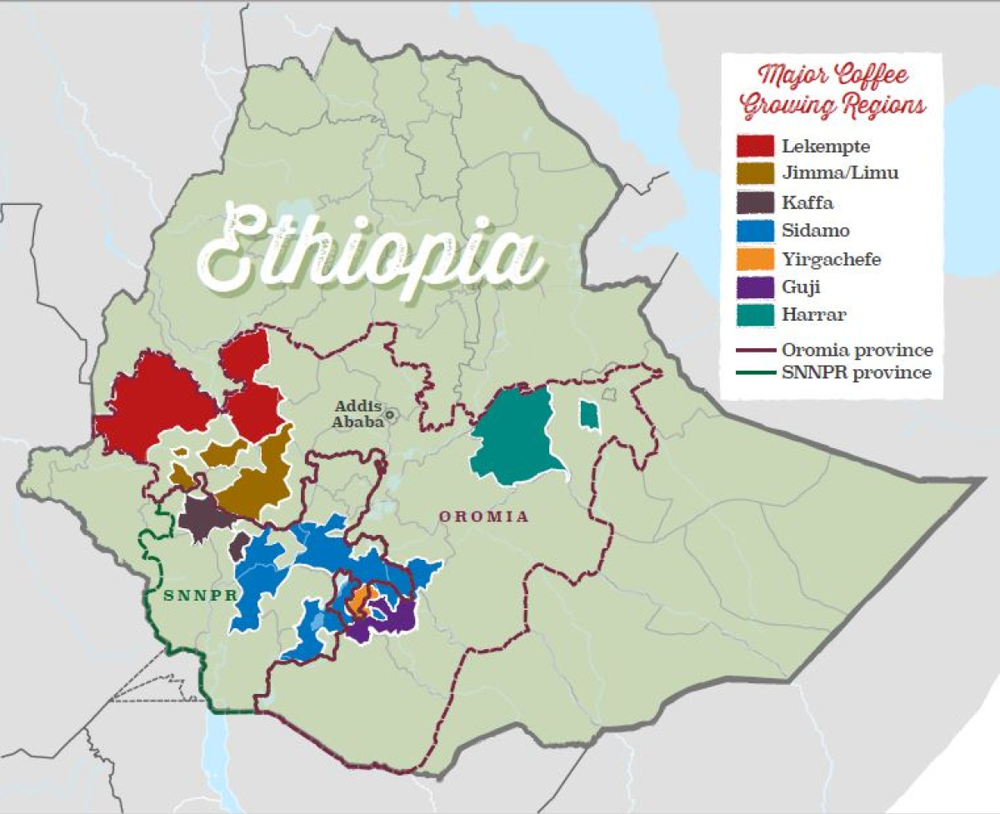
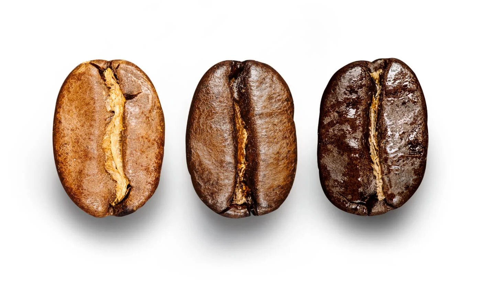
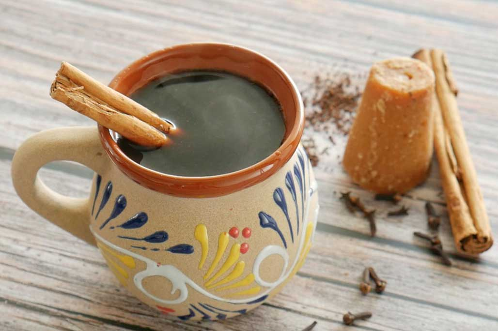

We invite you to grab a cup of coffee with us and explore our regions of
ethically sourced coffee beans.
We will share more than 20 years of coffee experience and knowledge, to inspire you to learn about our
different brewing methods as well as our roasting philosophy. Let's look at the origins of our coffee.

Mexico

Colombia

Ethiopia

We have three roast profiles- Blonde, Medium, and Dark roast.
- Blonde: These beans have a shorter roast time, lighter body and mellow flavors. Blonde roast also has
the stronger caffiene content.
The beans are burnt during the roasting process to get their desired flavor and color, effectiveky
minimizing the caffiene content. The lighter the bean, the stronger the caffiene.
- Medium roast: Balanced with smooth and rich flavors. They are brown in color and may show some oil on
the surface.
- Dark roast: Features a fuller body and robust, bold flavors. Usually little to no acidity in this roast.
